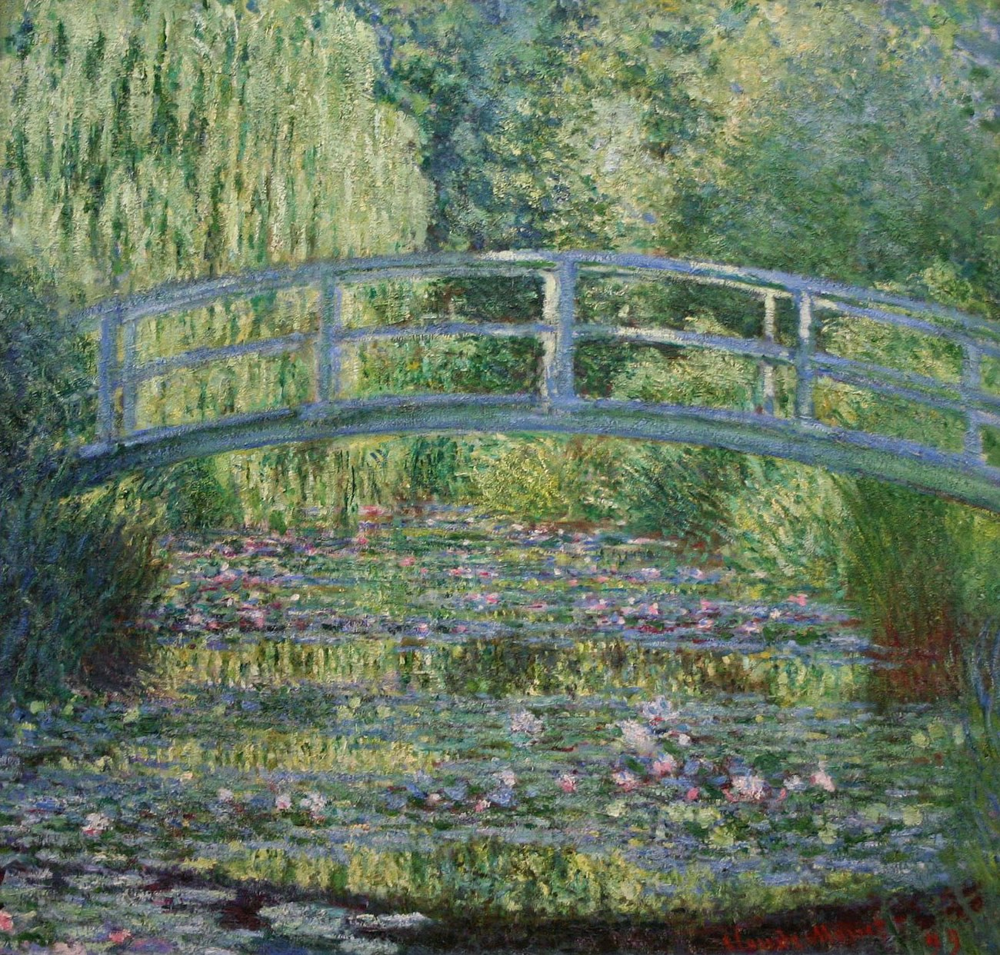

睡莲池 The Water-Lily Pond
睡莲池 / The Water-Lily Pond · 莫奈 / Claude Monet · 1899年 / 1899 · 伦敦国家美术馆 / The National Gallery, London
图片：Wikimedia Commons，公有领域 / Image: Wikimedia Commons, public domain

发现 · Discover
日本桥 The Japanese bridge
这座拱桥是莫奈自己建的，灵感来自他收藏的日本版画。
Monet built this humpback bridge himself, inspired by the Japanese prints in his collection.
飘浮的桥 A floating bridge
桥横跨整幅画，两端被画框截断，看起来像飘浮在水面上。
The bridge spans the whole canvas and is cut off at both edges, so it seems to float above the water.
睡莲 The water lilies
暗粉色和矢车菊蓝的睡莲，在一片绿色中冒出来，有的含苞，有的盛开。
Dusky pink and cornflower-blue lilies break through the greens, in various stages of bloom.
倒影 The reflection
桥的倒影，在画面下方形成一道暗色的弧线。
The bridge's reflection forms a dark arc at the bottom of the picture.
在变的视角 A shifting view
我们像是在仰视这座桥，却又在俯视渐渐漂远的睡莲。
It is as though we are looking up at the bridge, but down on the water lilies floating into the distance.
只是陪衬 Just the accompaniment
莫奈说过，水上的花远不是画面的全部，它们只是陪衬。
Monet said the water flowers were far from the whole scene; really, they were just the accompaniment.
故事 · The story
ACT I 第一幕 · 一座为了画画的花园 A garden made for painting
1893年，莫奈在吉维尼家旁边买下一块地，建了一座水上花园，“既为了悦目，也为了有东西可画”。他扩大池塘，种满新奇的睡莲。1895年，他在池塘最窄处建了这座桥，同年就开始画它。
In 1893, Monet bought land next to his house in Giverny and created a water garden "both for the pleasure of the eye and for the purpose of having subjects to paint". He enlarged the pond and filled it with exotic water lilies. In 1895 he built this bridge at the neck of the pond, and began painting it that same year.
1899年 · 伦敦国家美术馆 / 1899 · The National Gallery, London
ACT II 第二幕 · 十七种光 Seventeen kinds of light
1899年，花园已经长成。莫奈在不同的光线下，画了这个主题的17个视角。伦敦这一幅，是其中之一。
By 1899 the garden had matured. Monet painted 17 views of this motif under different light. The London painting is one of them.
1899年 · 伦敦国家美术馆 / 1899 · The National Gallery, London
ACT III 第三幕 · 越来越接近抽象 Towards abstraction
这座水上花园成了他晚年最着迷的东西，一共画了大约250幅。后来的池塘越来越接近抽象，但1899年这一幅，仍然扎根在看得见的现实里。
The water garden became the obsession of his later career, the subject of some 250 paintings. His later ponds grew almost abstract, but this 1899 version still feels anchored in visible reality.
1899年 · 伦敦国家美术馆 / 1899 · The National Gallery, London
为了有东西可画，他造了一座花园。 He made a garden so that he would have something to paint.
作品档案 · Artwork record
| 画家（生卒年） · Artist (dates) | 克劳德·莫奈（1840–1926） / Claude Monet (1840–1926) |
|---|---|
| 画名 · Title | 睡莲池 / The Water-Lily Pond |
| 年份 · Date | 1899年 / 1899 |
| 材质 · Medium | 布面油画 / Oil on canvas |
| 尺寸 · Dimensions | 88.3 × 93.1 cm |
| 收藏地 · Collection | 伦敦国家美术馆（编号 NG4240） / The National Gallery, London (NG4240) |
| 博物馆作品页 · Museum page | https://www.nationalgallery.org.uk/paintings/claude-monet-the-water-lily-pond |
关于画家 · About the artist
克劳德·莫奈（1840–1926），法国印象派最重要的风景画家。他生于巴黎，在勒阿弗尔长大。普法战争期间（1870–71）曾移居伦敦。1883年起住在吉维尼，晚年专注于在不同光线下反复画同一主题，比如干草堆、鲁昂大教堂和他自己的花园。
Claude Monet (1840–1926) was the leading French Impressionist landscape painter. Born in Paris, he grew up in Le Havre and moved to London during the Franco-Prussian War (1870–71). From 1883 he lived in Giverny, where he painted series of a single subject under different light: haystacks, Rouen Cathedral and his own garden.